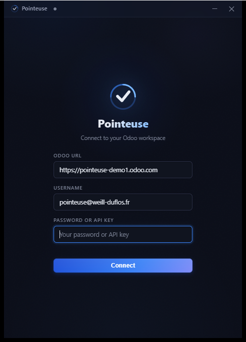
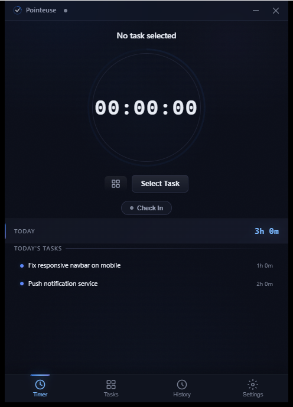
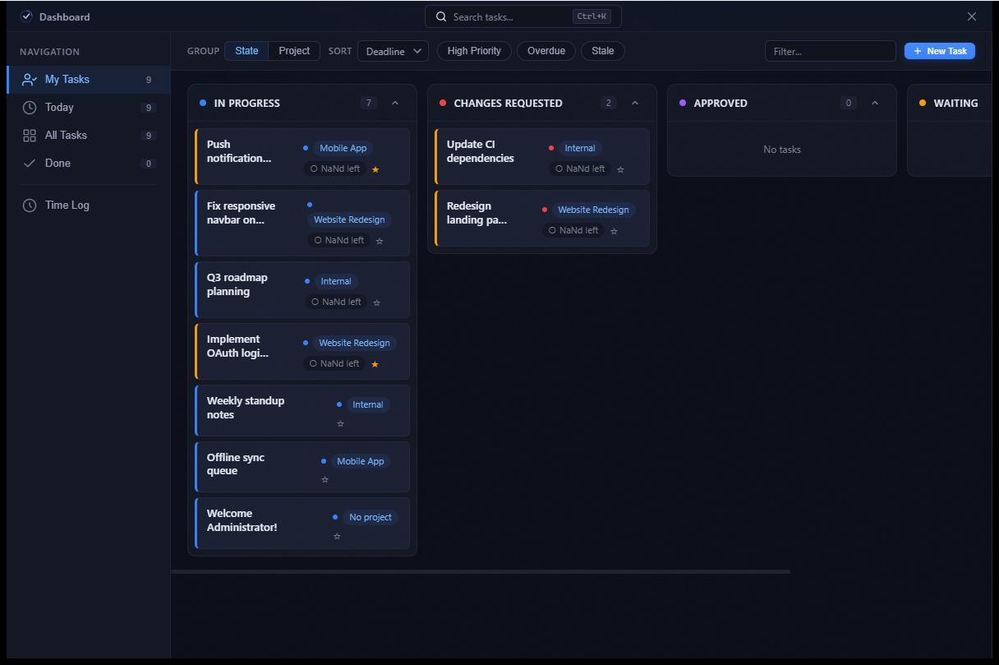

Pointeuse
A fast, native time tracker for Odoo — on desktop (Windows / Linux / macOS) and Android. Free and open source. Pointeuse is French for a punch clock.



What it does
Track time on Odoo tasks
Start/stop a timer on any task — timesheets land straight in Odoo.
Attendance built in
Check in / out from the app or the system tray; the timer auto-stops when you check out anywhere else.
Synced across devices
Start a timer on your phone, your desktop picks it up — and stopping anywhere stops it everywhere. No extra server: it runs over your Odoo.
Offline-first
Everything is cached locally; timesheets queue offline and sync when the connection returns.
Idle reminders
A gentle popup asks what you're working on, with quick-switch suggestions.
Private by design
No analytics, no ads, no third-party servers — your data only ever goes to your Odoo. Privacy policy.
Join the Android closed beta BETA
Pointeuse is on Google Play as a closed beta. You can get the Play version (with automatic updates) in two steps:
- Join the tester group: groups.google.com/g/opentest_awd — click "Join group" with the Google account you use on your Android device.
- Opt in to testing at play.google.com/apps/testing/fr.weill_duflos.pointeuse, then install Pointeuse from the Play Store link it gives you.
Can't wait? You can sideload the APK right now from the
latest GitHub release
(pointeuse-vX.Y.Z-android-universal.apk).
How it connects
Pointeuse talks to any Odoo 14+ instance over standard XML-RPC — no server-side module to install. You need your server URL, database name, and your login with a password or an API key (required for Odoo Online). Credentials are stored in your system keyring, never on disk.
Une pointeuse rapide et native pour Odoo — sur ordinateur (Windows / Linux / macOS) et Android. Gratuite et open source.
Ce qu'elle fait
Suivi du temps sur les tâches Odoo
Démarrez/arrêtez un minuteur sur n'importe quelle tâche — les feuilles de temps arrivent directement dans Odoo.
Présences intégrées
Pointez l'arrivée/le départ depuis l'app ou la barre système ; le minuteur s'arrête automatiquement si vous partez ailleurs.
Synchronisée entre appareils
Démarrez un minuteur sur votre téléphone, votre ordinateur le reprend — et l'arrêt se propage partout. Aucun serveur en plus : tout passe par votre Odoo.
Hors-ligne d'abord
Tout est mis en cache localement ; les saisies s'enfilent hors-ligne et se synchronisent au retour de la connexion.
Rappels d'inactivité
Une fenêtre discrète vous demande sur quoi vous travaillez, avec des suggestions rapides.
Privée par conception
Pas d'analyse, pas de pub, pas de serveur tiers — vos données ne vont que vers votre Odoo. Politique de confidentialité.
Rejoindre la bêta fermée Android BÊTA
Pointeuse est disponible sur Google Play en bêta fermée. Vous pouvez obtenir la version Play (avec mises à jour automatiques) en deux étapes :
- Rejoignez le groupe de testeurs : groups.google.com/g/opentest_awd — cliquez sur « Rejoindre le groupe » avec le compte Google utilisé sur votre appareil Android.
- Activez le test sur play.google.com/apps/testing/fr.weill_duflos.pointeuse, puis installez Pointeuse depuis le lien Play Store fourni.
Pressé·e ? Vous pouvez installer l'APK dès maintenant depuis la
dernière release GitHub
(pointeuse-vX.Y.Z-android-universal.apk).
Comment elle se connecte
Pointeuse communique avec toute instance Odoo 14+ via XML-RPC standard — aucun module serveur à installer. Il vous faut l'URL du serveur, le nom de la base et votre identifiant avec mot de passe ou clé API (obligatoire pour Odoo Online). Les identifiants sont stockés dans le trousseau du système, jamais sur disque.